Regression comparison
Download resultsDataset
Training setting
Repulsion weight
Repulsion location
Compare repulsion locations
Method
Random points redraw every step and exclude all training inputs. Training and random use B points; combined uses 2B. Prediction axes match within each DE or BDKN row.
Functional repulsion
BetterWorse · relative rank within each column
DE
| Repulsion inputs | RMSE | NLL | Training seconds |
|---|---|---|---|
| Training | 1.22499 | 501.96640 | 11.76 |
| Random | 2.16056 | 159.99130 | 12.62 |
| Training + random | 1.57915 | 162.44366 | 12.68 |
BDKN
| Repulsion inputs | RMSE | NLL | Training seconds |
|---|---|---|---|
| Training | 1.22568 | 65.38628 | 11.92 |
| Random | 2.09692 | 21.30501 | 12.75 |
| Training + random | 1.64101 | 22.83219 | 12.82 |
Stage 1 · total loss and data fit
X: log · Y: signed log
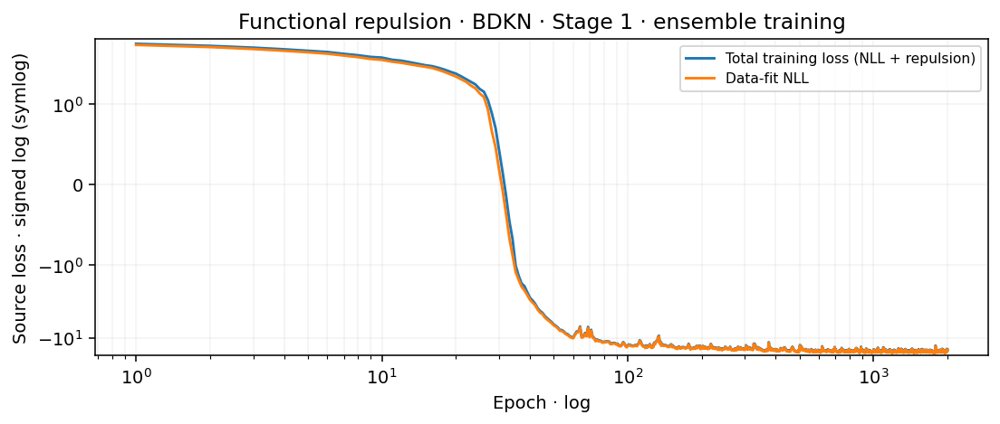
X: log · Y: signed log
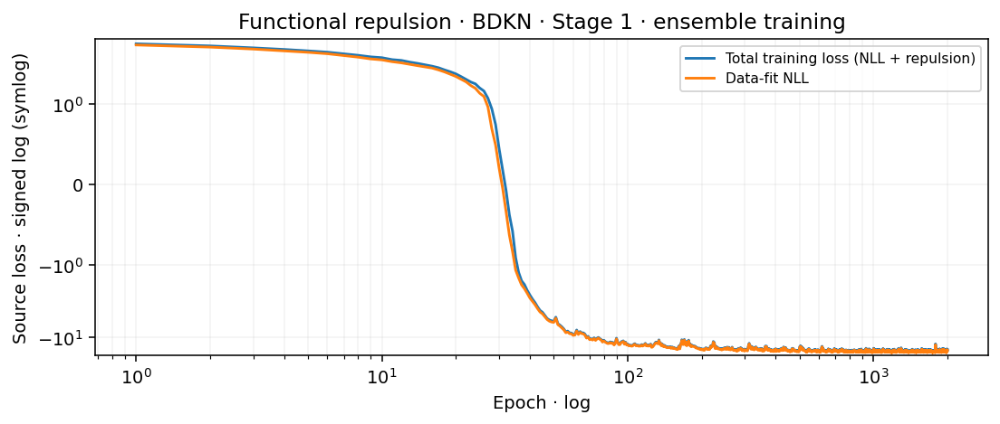
X: log · Y: signed log
Repulsion loss R only
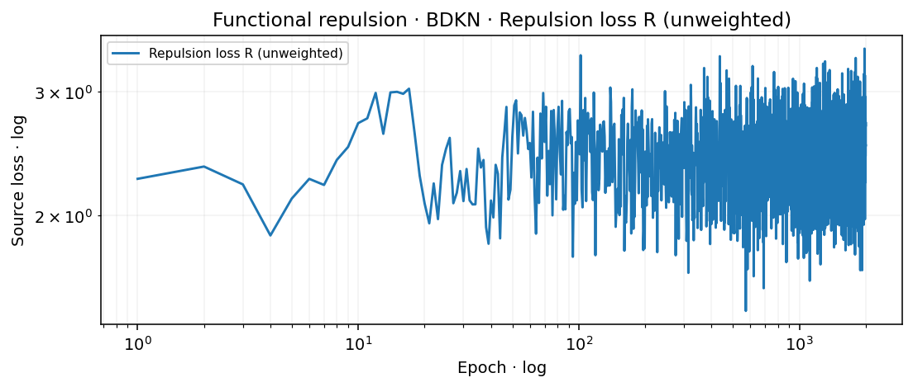
X: log · Y: log
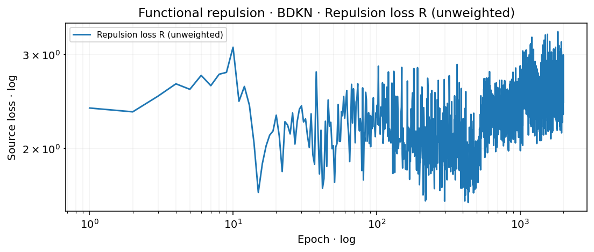
X: log · Y: log
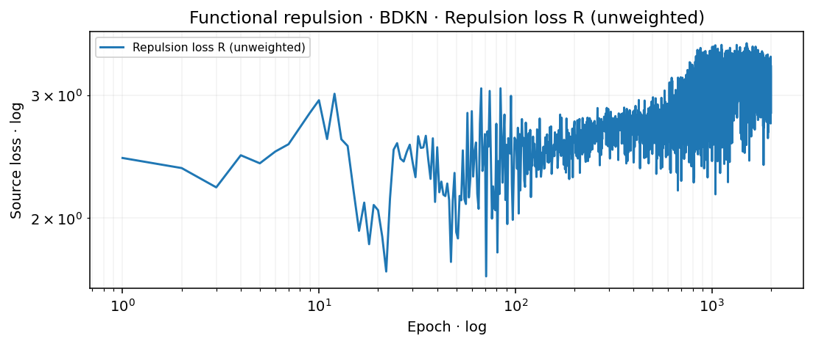
X: log · Y: log
Stage 2 · Bayesian marginal NLL
X: log · Y: signed log
X: log · Y: signed log
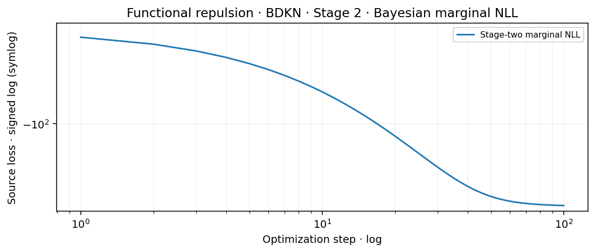
X: log · Y: signed log
First-order repulsion
BetterWorse · relative rank within each column
DE
| Repulsion inputs | RMSE | NLL | Training seconds |
|---|---|---|---|
| Training | 1.22758 | 382.55966 | 24.10 |
| Random | 1.32930 | 183.70563 | 25.48 |
| Training + random | 1.22908 | 156.21030 | 25.63 |
BDKN
| Repulsion inputs | RMSE | NLL | Training seconds |
|---|---|---|---|
| Training | 1.22730 | 54.13857 | 24.24 |
| Random | 1.37141 | 21.44651 | 25.61 |
| Training + random | 1.19797 | 19.69901 | 25.77 |
Stage 1 · total loss and data fit
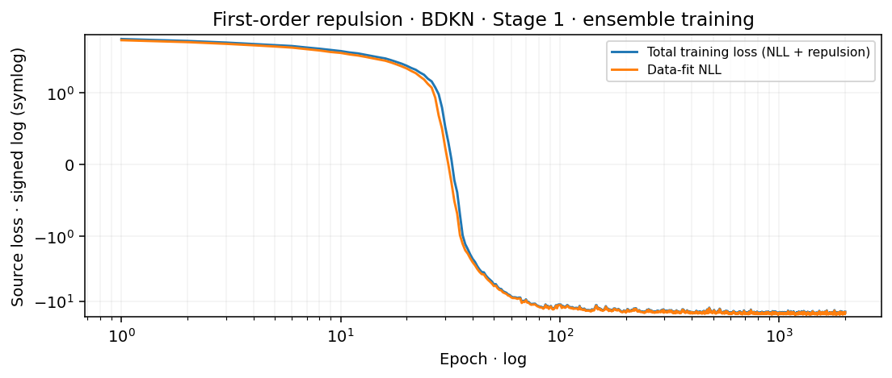
X: log · Y: signed log
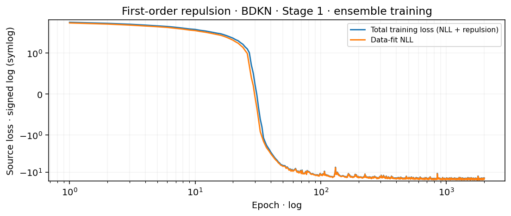
X: log · Y: signed log
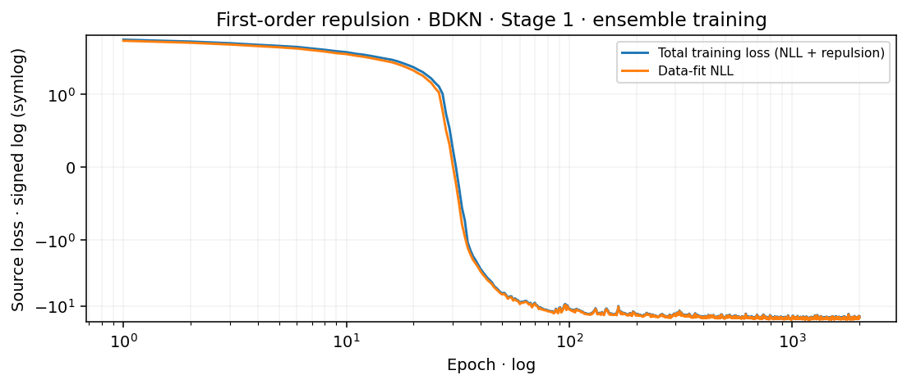
X: log · Y: signed log
Repulsion loss R only
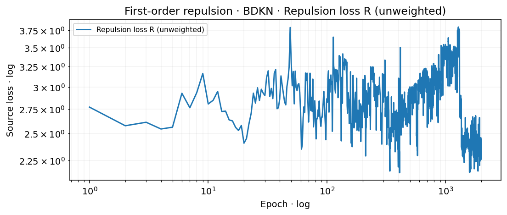
X: log · Y: log
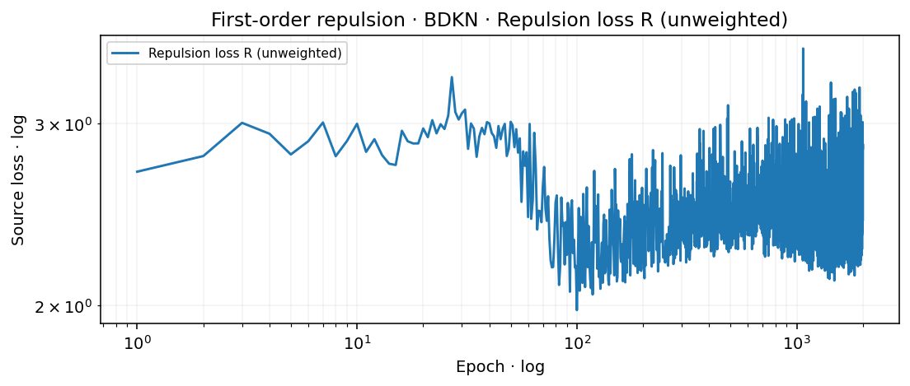
X: log · Y: log
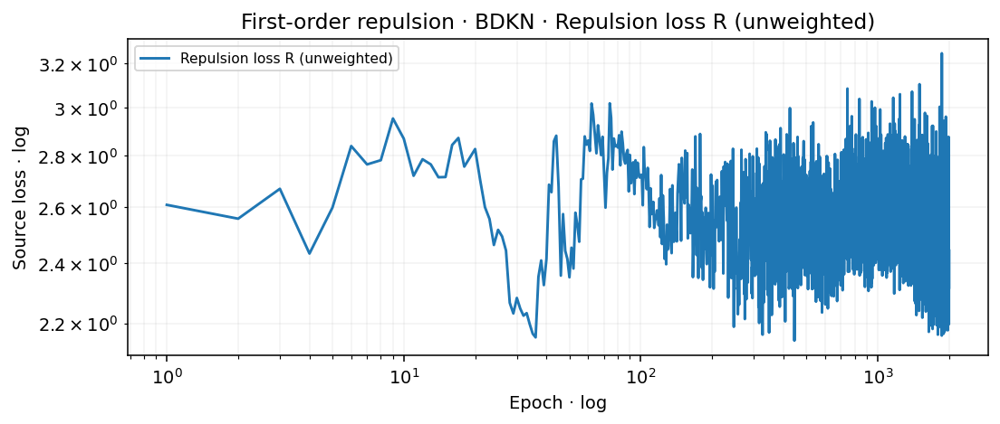
X: log · Y: log
Stage 2 · Bayesian marginal NLL
Weight repulsion · location-independent
The loss compares network parameters directly. These same results apply to every location.
| Stage | RMSE | NLL | Training seconds |
|---|---|---|---|
| DE | 2.45334 | 199.94228 | 9.56 |
| BDKN | 2.53627 | 19.72082 | 9.70 |